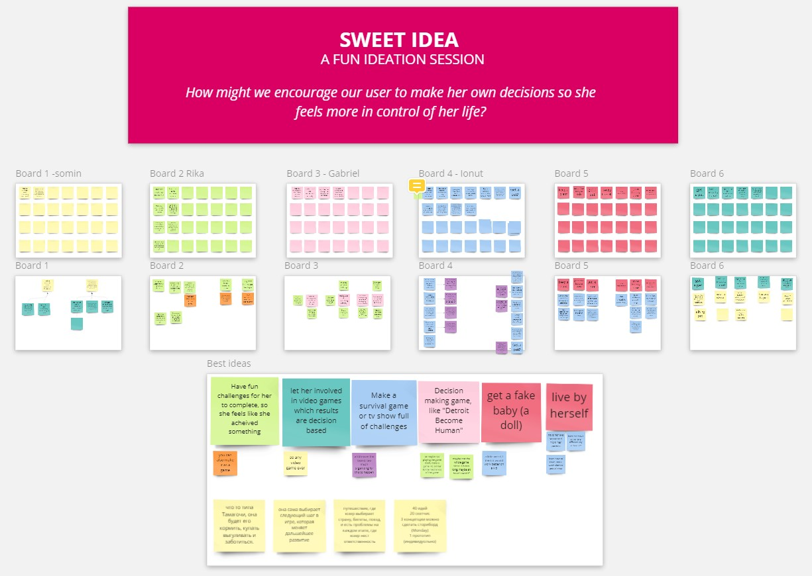
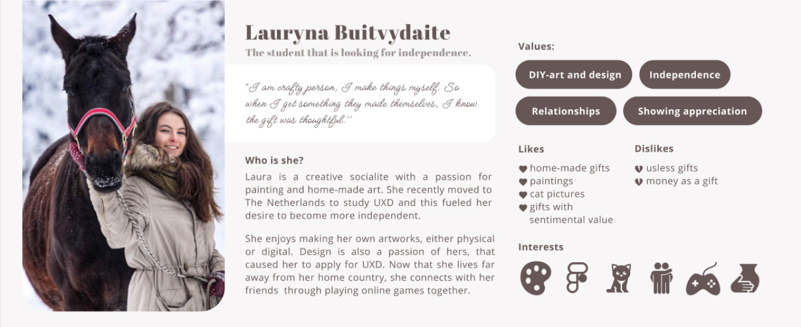
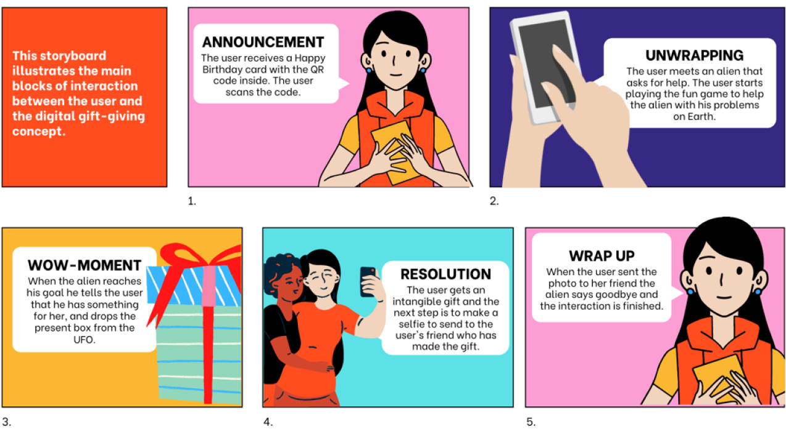
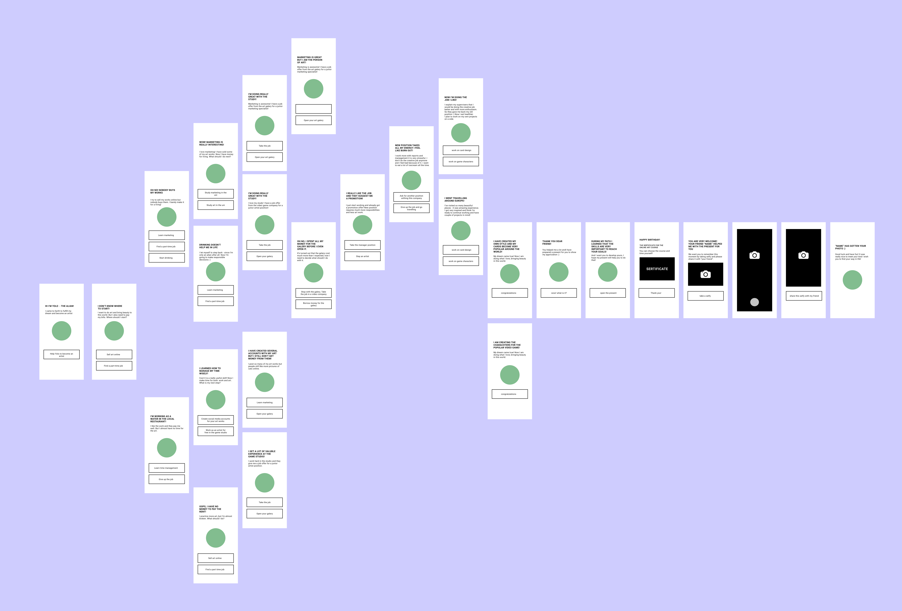

Bespoke Design
Role: UX/UI Designer
Tools: Miro, Photoshop, Figma
Bespoke design is the creation of a product based on deep and phased research of a specific user in order to understand her needs and pain points in order to bring maximum value to the product.
The goal of this project was to create a digital experience of giving an integible gift. The gift-giving experince should include four elements: announcement, unwrapping, wow-moment and resolution.
interactive prototypeMethods
Ethnographic Interview, partisipant observation, Photo Study, Questionnaire, Affinity Diagram, User Porteait, Design Vision, Design Direction, Ideation, Storyboard, Concepts, Low-fi Prototype, Testing, High-fi Prototype.
Challenge
The challenge is the creation of a unique and customized experience of giving a gift in a digital format, taking into account the needs and characteristics of a particular user.
affinity diagram

I collected all data from the interview, observation, and questionnaire and created clusters of similar information I got from different research methods. Cluster creation allowed me to discover the important findings and insights about my user.
Ideation
For the ideation session, I used the "How might we?" questions to generate different ideas for the design direction. As a result, I got many draft ideas to work with.
User portrait
Storyboard
Low-fi prototype
High-fi prototype